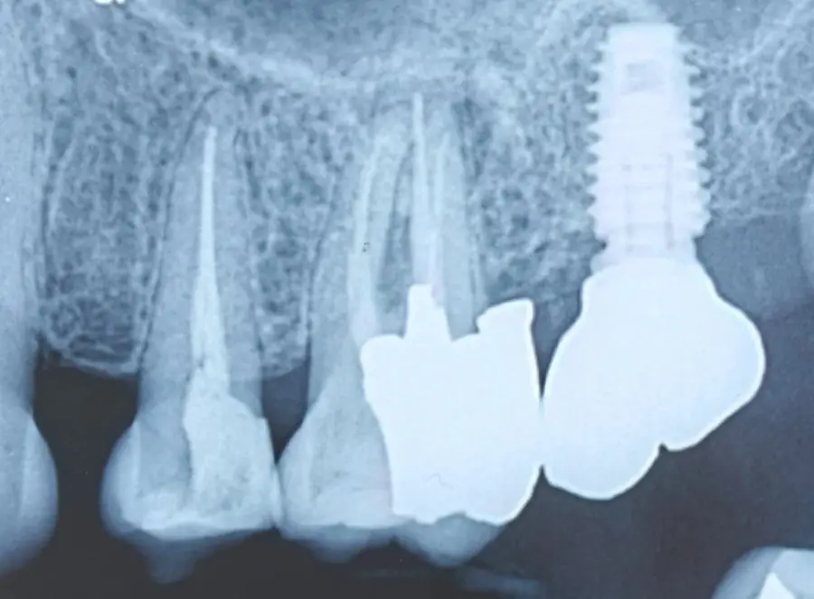

نسخه استخراجشده؛ ترجمه یا تأیید علمی انجام نشده است. وضعیت: captured
بیمار برای نظر دوم دربارهی کشیدن پریمولار دوم (دندان ۵) آمده است؛ به او گفتهاند غیرقابلنگهداری است. در شرح حال، شکایت مهم دیگری هم دارد: درد مزمن و طولانیمدت در ناحیهی مولر اول مجاور (دندان ۶).

دندان ۵: سه دیوارهی سالم دارد و تنها دیوارهی دیستال از دست رفته است. این مانع تأمین ferrule مناسب نیست؛ پس کشیدن رد شد و دندان با ترمیم و روکش حفظ میشود.
دندان ۶ در رادیوگرافی سه یافته دارد: ضایعهی مشخص با اندوی نامناسب، نمایی مشکوک به درگیری فورکا، و یک اورهنگ کاملاً واضح در دیستال. درد میتواند از شعلهور شدن مشکل اندو، درگیری فورکا یا التهاب ناشی از گیر غذایی اطراف اورهنگ باشد.
تست دق التهاب لیگامان پریودنتال و ناحیهی پریاپیکال را میسنجد؛ و درگیری فورکا تشخیصی بالینی است، نه تصویری. حضور یک نمای رادیوگرافیک نامطلوب لزوماً به معنای منشأ درد نیست.
ایمپلنت دندان ۷ و روکش آن را یک همکار متخصص پریو گذاشته، و روکش ایمپلنت ۷ دقیقاً بعد از این پرکردگی و ایجاد اورهنگ تحویل داده شده است.
پیش از آغاز هر درمان جدید، بهویژه تحویل روکش ایمپلنت، ارزیابی دقیق دندانهای مجاور و رفع مشکلات آنها (مثل اورهنگ) الزامی است. تحویل پروتز در محیط ناسالم، مداخلههای بعدی را برای همکاران دیگر پرریسک و دشوار میکند و فرصت تغییر استراتژیک در طرح درمان کلی را هم میگیرد. هرگز روی فونداسیون ارزیابینشده و ملتهب مجاور، پروتز جدید بنا نکن.